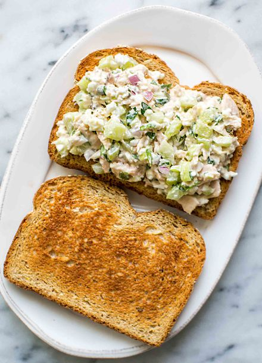

Tuna Sandwich

Description
This is a recipe for your run of the mill tuna sandwich. Nothing special, nothign stinky, just a tuna sandwich
I've been eating these my whole life. You can either toast the bread or go raw. Dealer's choice.
Ingredients
- Sourdough bread
- A can of tuna fish
- Mayonnaise
- Dijon mustard
- Celery
- Salt and pepper
Steps
- Put bread on a flat surface
- Mash together the tuna fish, mayonnaise, mustard and celery
- Season with salt and pepper
- Place tuna salad on the bread
- Complete the sandwich by placing the 2nd piece of bread on top of the now shmeared slice